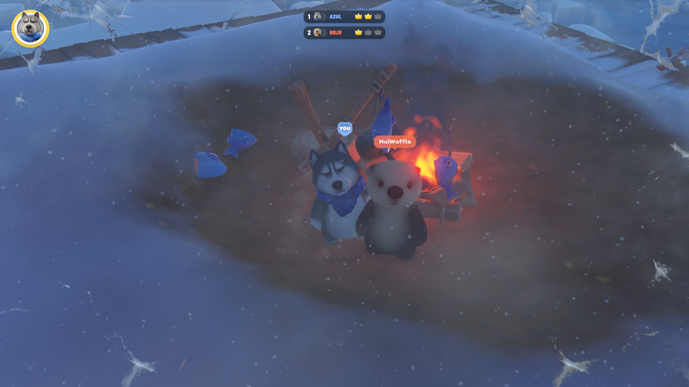
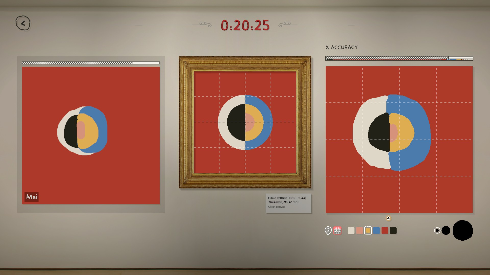
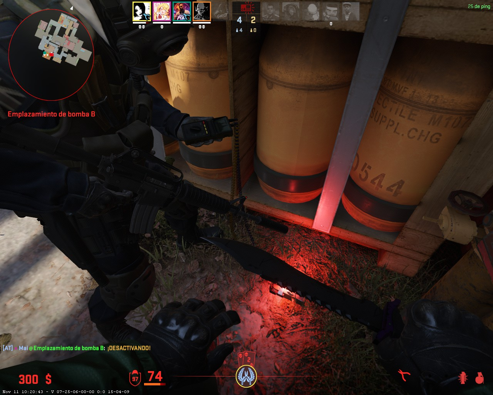
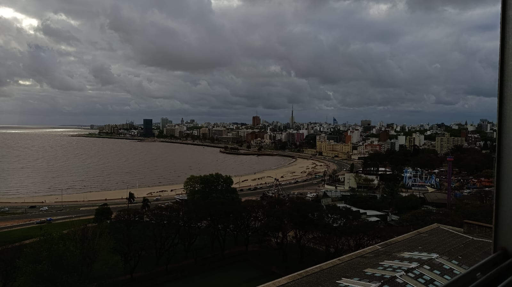
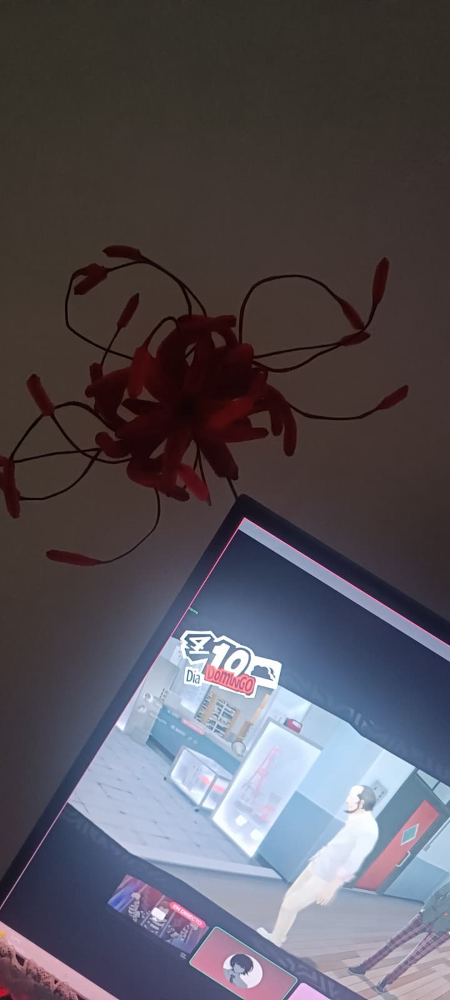

♥
Hola gordita
Feliz primer mes juntos <3
Feliz primer mes juntos <3
Tras lo ocurrido en la biblioteca de alejandría, los gordos eruditos del conocimiento decidieron dejar aquí todo el conocimiento documentado hasta el día de hoy, sobre estos dos pelotudos: Mia y Eze

¿Por qué el museo comienza con esta foto? La respuesta es simple: es el único momento donde no me estabas cagando bien a trompadas. Sin dudas es para festejarlo.

La pintura de la gorda probablemente inspiró a Hitler tras ser rechazado de la academia de arte.

Hay momentos que parecen pequeños, pero que terminan significando muchísimo.
Es posible que sea la primera y última vez que la gorda defusó una bomba.
Muchas gracias por llegar hasta aquí.
Estoy muy feliz de llevar un mes a tu lado como tu pareja, y espero ser más que simplemente eso, me gustaría ser un compañero para ti.
Nunca sé cómo iniciar estas cartas; siendo sincero, querer llegar a ti es lo único en lo que mi mente, en blanco, es capaz de pensar cuando estoy frente al espacio esperando ser llenado. Gracias por aparecerte en mi vida. Realmente, todo ha ido para mejor desde que te conozco. Adoro reírme contigo por cualquier boludez, hacerte enojar y besarte. Besarte mucho. Espero, de toda fe, que las cosas sigan saliendo así de bien y natural. Después de haberme topado a tanta gente en vida, buena o mala, mi corazón puede sentirse comprendido. He hablado con muchas personas, compartido momentos, pero el nivel de entendimiento que desde el primer momento tuve contigo, modificó la forma en la que mi corazón bombea.

¿Sería necesario, en esta carta, manifestarte cuánto amo tus ojitos? ¿Tendría sentido hablarte de cuánto me quiero perder en cada rincón de ti? No me malentiendas, pues mi duda recae en que, ¿de qué serviría manifestártelo por aquí, cuando tú y yo sabemos que lo primero que viene a mi mente al tenerte cerca es lanzarme sobre ti?
En donde sí encuentro un poco más de concilio en manifestártelo por aquí, es pues, en decirte que estoy orgulloso de ti. Conozco algunas de tus marcas, no ha sido nada fácil, ¿verdad? No repares en esconderlas, porque quiero conocerlas todas. Y quiero besar cada una de ellas, hasta taparlas completamente con amor. Hoy, espero que sepas que estaré ahí para escucharte, y mantenerme cerca, aún cuando lejos me encuentre. Siempre te hago saber esto, pero nunca lo habré dicho las suficientes veces. Me maravilla la persona que has construido, con todo lo que tuviste a tu alcance. Como un niño que junta arena, construiste un castillo valioso, no por su fachada, sino por lo que guarda dentro.

Gracias por hacerme el novio más feliz de todos en este tiempo que llevamos. Eres malditamente increíble.